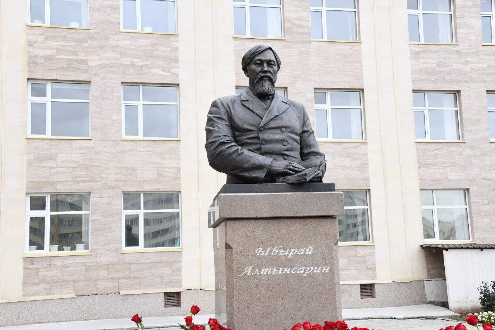

Фотосурет уақытша жүктелмеді')">Ыбырай Алтынсарин (1841–1889) — ағартушы, педагог және жазушы. Ол қазақ балаларына білім беруді дамытуға, мектептер ашуға және оқу құралдарын жазуға зор үлес қосты.
Қосымша ақпарат: kk.wikipedia.org
Сурет: https://informburo.kz/novosti/v-nur-sultane-otkryli-byust-ibraya-altynsarina